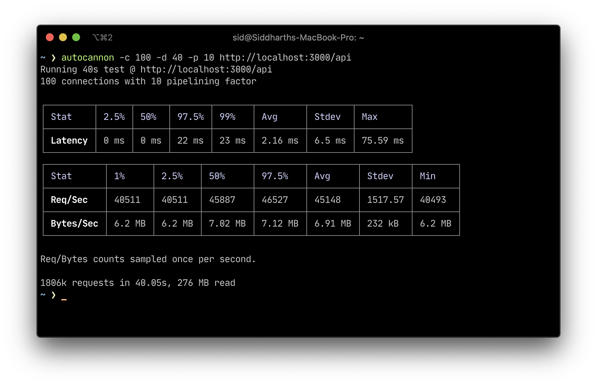

A minimal file tree based api router for building rest api's with node
RouteX started as a clone of the Next.js' Api Routes implmentation and is now on it's path to compete with other frameworks as the simplest way to setup API routes. There's been numerous posts on why using the folder tree makes it atomic and easier to handle the separation between logic. While you cannot bundle code with routex since each file is independent of the other and doesn't need the others for its execution.
The Idea and Inspiration for the creation remains to be Vercel's Next.js
Screenshot of autocannon to benchmark
/api from the examples folder

This library is still in active development and is bound to have bugs , kindly make sure you use it only for testing and not for production as of now.
# for global install to avoid installing the devDependencies
npm i -g barelyhuman/routex --only=prod
# for local install to avoid installing the devDependencies
npm i barelyhuman/routex --only=prod
# for global install to avoid installing the devDependencies
npm i -g barelyhuman/routex#canary --only=prod
# for local install to avoid installing the devDependencies
npm i barelyhuman/routex#canary --only=prod
You can run routex in any folder and the
.js files will be considered as routes. The CLI
considers the api folder to be the root and will pass
down http req,res to the exported function.
Then go ahead and create directories and files under any folder as
mentioned or check the examples folder for reference.
Example file tree:
We create a folder example you might want to call it
something like routes and point routex to
it using -d ./routes to give you an http Server running
for the files inside of the routes folder.
-example
- api
- me.js // this compiles to <host>:<port>/api/me
- [id].js; // this compile to <host>:<port>/api/<dynamicParameterId>
Example me.js that only handles
GET requests:
module.exports = (req, res) => {
if(req.method === 'GET'){
res.writeHead(200, { 'Content-Type': 'text/plain' });
res.write('Hello World!');
res.end();
return;
}
res.statusCode = 404;
res.end();
return;
};
Example [id].js that handles the dynamic path param:
GET|POST|DELETE /api/1
module.exports = (req, res) => {
res.write('path param ' + JSON.stringify(req.params)) // {"id":1};
res.end();
};
Then run routex on the root folder of the project, this folder
should contain the api folder or specify a directory
using the -d or --dir command.
# If installed globally
routex -d ./example
# If installed locally
npx routex -d ./example
-d | --dir to specify the directory to be used for
routes, defaults to api
-p | --port to specify the port to start the http
server on , defaults to 3000
Example, the following would use the example folder as
the base path for the routes and start the server on port
3001
routex -d ./example -p 3001